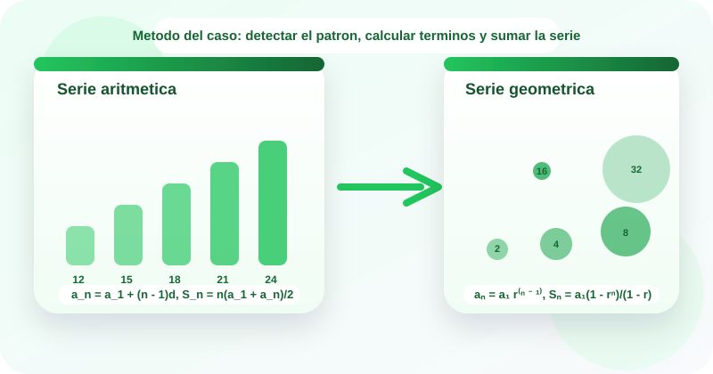

Casos guiados
Estudio de casos
Series aritmeticas y geometricas
📈 Las series aritmeticas y geometricas permiten modelar crecimientos lineales o multiplicativos, y ayudan a calcular rapidamente acumulados sin sumar termino por termino.
En tecnologia aparecen al analizar incrementos regulares de carga o costo, replicacion exponencial de procesos o proyecciones de consumo y almacenamiento. Este OVA se centra en reconocer la diferencia comun, la razon y las formulas de suma finita para interpretar situaciones del contexto de software.
El recurso sigue la metodologia de estudio de casos para identificar el patron del crecimiento, decidir si es aritmetico o geometrico, calcular terminos y justificar la suma en lenguaje natural.

Objetivos de aprendizaje
- 🧠 Reconocer cuando una sucesion o serie presenta crecimiento aditivo constante o crecimiento multiplicativo constante.
- ➕ Calcular terminos y sumas de series aritmeticas usando la diferencia comun y las formulas de suma finita.
- ✖️ Calcular terminos y sumas de series geometricas identificando la razon y aplicando su formula correspondiente.
- 💻 Resolver casos del contexto tecnologico donde la carga, el costo o la replicacion siguen patrones aritmeticos o geometricos.
- ✅ Justificar por que un modelo es aritmetico o geometrico y explicar el significado practico del termino o suma obtenida.
Contenido tematico
Del patron numerico al acumulado de la serie
El eje del recurso es leer casos, identificar la progresion y usar la formula que corresponde al crecimiento observado.
Serie aritmetica
Cada termino cambia por la misma cantidad fija respecto al anterior.
a_n = a_1 + (n - 1)d
Se reconoce por una diferencia comun constante.
Serie geometrica
Cada termino se obtiene multiplicando el anterior por la misma razon.
a_n = a_1 r^(n - 1)
Se reconoce por una razon constante entre terminos consecutivos.
Diferencia comun
Es el incremento o decremento fijo que define una progresion aritmetica.
d = a_n - a_(n-1)
Si d no cambia, el comportamiento es lineal.
Razon
Es el factor fijo por el que se multiplica una progresion geometrica.
r = a_n / a_(n-1)
Si r se mantiene, el crecimiento es multiplicativo.
Suma finita
Resume rapidamente el acumulado de varios terminos sin sumarlos uno a uno.
S_n
Es clave cuando el problema pregunta por el total acumulado.
Actividades de practica
Refuerza la identificacion de patrones, el uso de formulas y la interpretacion de acumulados con ejercicios interactivos y laboratorios numericos.
Actividad 1. Clasifica cada tarjeta
Arrastra cada elemento hacia la categoria correcta.
Si estas en celular, toca una tarjeta y luego la categoria correspondiente.
4, 7, 10, 13
3, 6, 12, 24
a_n = a_1 + (n - 1)d
S_n = a_1(1 - r^n)/(1 - r)
d = 5
r = 2
20, 24, 28, 32
5, 15, 45, 135
Serie aritmetica
Serie geometrica
Formula
Actividad 2. Relaciona el caso con la idea correcta
Arrastra cada situacion hacia la categoria que mejor la representa.
Piensa si el caso describe diferencia constante, razon constante o una suma acumulada.
Cada sprint se agregan 4 tareas mas que en el anterior.
El numero de replicas se duplica en cada intervalo.
Se pide el total acumulado de una progresion con incremento fijo.
Se requiere el total acumulado de una progresion multiplicativa.
La diferencia entre terminos consecutivos es siempre la misma.
Cada termino se obtiene multiplicando por 3 al anterior.
Se usa S_n = n(a_1 + a_n)/2.
Se usa S_n = a_1(1 - r^n)/(1 - r).
Aritmetica
Geometrica
Suma aritmetica
Suma geometrica
Actividad 3. Ordena la metodologia del caso
Asigna del 1 al 5 el orden correcto para resolver un problema de series.
Actividad 4. Completa los resultados
Selecciona la respuesta correcta en cada ejercicio.
| Ejercicio | Respuesta |
|---|---|
| Si a_1 = 7 y d = 4, entonces a_6 = | |
| Si a_1 = 3 y r = 2, entonces a_5 = | |
| Si a_1 = 10, a_n = 22 y n = 4, entonces S_n = | |
| Si a_1 = 2, r = 3 y n = 4, entonces S_n = |
Actividad 5. Laboratorio de series
Experimenta con una progresion aritmetica y una geometrica para obtener terminos y acumulados.
Laboratorio 1. Serie aritmetica
Listo para analizar
Laboratorio 2. Serie geometrica
Listo para analizar
Evaluacion de comprension
Responde el cuestionario para verificar tu dominio sobre series aritmeticas y geometricas.
Recursos de apoyo
Antes de calcular
Comprueba si el patron cambia por suma/resta fija o por multiplicacion fija.
Durante el analisis
Identifica si el problema pide un termino futuro o el total acumulado de la serie.
Despues del calculo
Traduce el termino o la suma obtenida al contexto de costo, carga o replicacion.
Hoja rapida de estudio
- La aritmetica cambia por diferencia constante.
- La geometrica cambia por razon constante.
- El termino general proyecta un valor en la posicion n.
- La suma finita calcula el acumulado de varios terminos.
- Antes de usar una formula, decide si el crecimiento es lineal o multiplicativo.
Bibliografia
Stewart, J. Precalculo.
Zill, D. G. Algebra y trigonometria.
Larson, R. Precalculo con funciones y graficas.
Materiales de aula de la asignatura Fundamentos Matematicos del programa Tecnologia en Desarrollo de Software.
Creado para:
Tecnologia en Desarrollo de Software · Fundamentos Matematicos